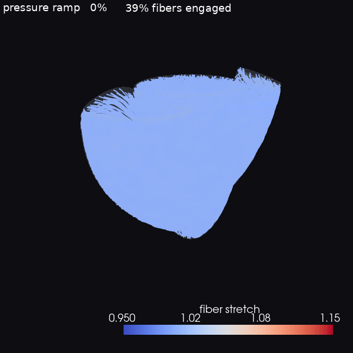

BiV myocardial fibers — interactive
Rule-based Holzapfel-Ogden fibers at end-diastole. Drag to rotate, scroll to zoom.
Fiber stretch λf →
Fiber stress σf →

Engagement under inflation: wall + fibers deform together; fibers sweep blue→red
(slack→stretched) as they cross λf = 1 with rising end-diastolic pressure.